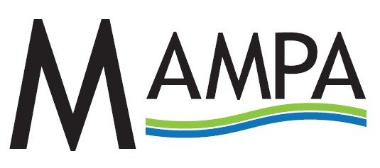
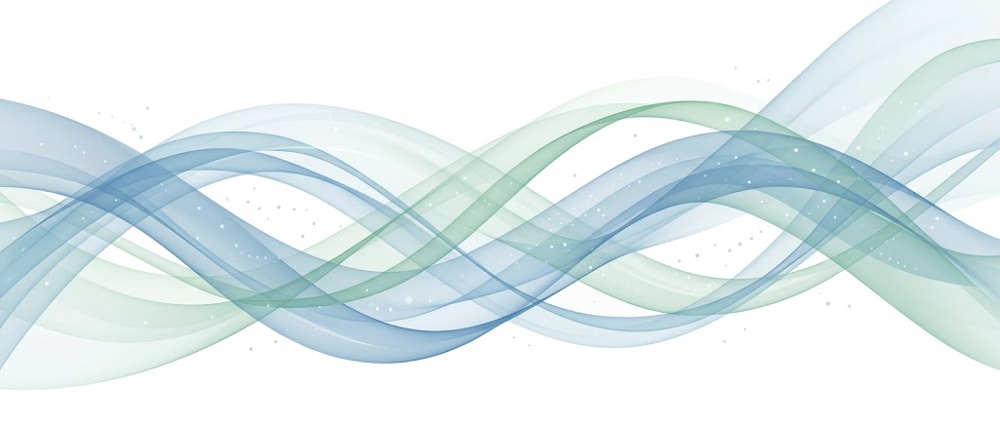

Ayudamos a personas y organizaciones a gestionar riesgos crediticios, optimizar cobranzas y mejorar su rentabilidad mediante decisiones respaldadas por datos, experiencia y conocimiento del negocio.
Solicitar una consultaMAMPA es una voz de origen sanavirón asociada al concepto de "agua que fluye".
Así como el agua encuentra su cause, conecta espacios y genera vida a su paso, en MAMPA impulsamos el flujo de información para transformarla en conocimiento, oportunidades, decisiones estratégicas y crecimiento, a partir de una adecuada definición de riesgos.
Creemos que los datos, cuando circulan, se organizan y se interpretan correctamente, se convierten en una ventaja competitiva sostenible para personas y organizaciones.
En MAMPA somos un equipo de colaboradores que combinamos consultoría financiera, medición de riesgos de créditos, gestión de datos y tecnología para acompañar a nuestros partners estratégicos en la optimización de recursos, la generación de información de valor y la toma de decisiones basadas en evidencia econométrica.
Seleccione el segmento para conocer soluciones específicas.
Definición de Riesgo de Créditos, Perfilamiento, Medición, Planeamiento financiero,
análisis de rentabilidad, Dashboards e indicadores para monitorear resultados en tiempo real (on-the-fly).
Transformación de datos en información confiable, accionable y propicia a obtener resultados concretos. Clusterings de Clientes Nuevos y Existentes.
Soluciones orientadas a mejorar la recuperación de créditos, fortalecer el flujo de fondos y optimizar la gestión de cuentas por cobrar. Scorings.
Optimización de procesos mediante herramientas analíticas y tecnológicas. Work-flows.
Proveer soluciones financieras estratégicas y servicios de gestión de riesgos personalizados, ayudando a nuestros partners estratégicos a optimizar sus recursos, tomar decisiones informadas y mejorar su rentabilidad mediante un enfoque basado en datos, innovación y excelencia operativa.
Ser el partner estratégico de referencia en consultoría de riesgos, finanzas y gestión de datos, reconocido por transformar información en valor tangible para las organizaciones, impulsando su crecimiento sostenible y fortaleciendo su competitividad en un entorno empresarial dinámico y en constante evolución.
“El auténtico genio consiste en la capacidad para evaluar información incierta, aleatoria y contradictoria.” (Winston Churchill)